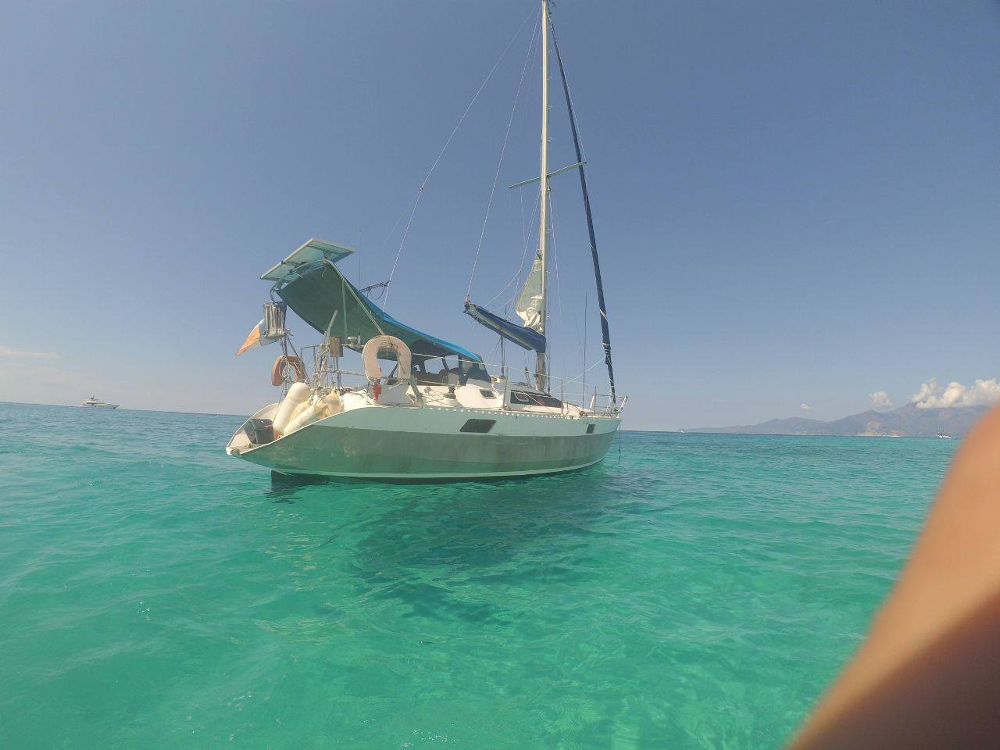

Enfin!
Mon premier bateau, dans le siècle passé, a était un Flying Junior : pouvoir me déplacer librement de plage en plage avec des amis de longue date ou même rencontrés en chemin, sages ou impulsifs - voilà ce qui m’a conquis. Dans la maturité j’ai repris la navigation de façon beaucoup plus intensive, cette fois "en tant qu’adulte", avec de vrais bateaux — en les gérant, en participant à des voyages pour d’autres, en initiant à la voile ceux qui n’en avaient qu’une vague idée, en transférant des bateaux à leurs nouveaux propriétaires, et bien plus.
La poursuite logique de tout ceci a été de prendre pleinement la responsabilité d’un bateau. Une étape difficile, que j’ai mûrie pendant des années, car la liberté accrue que procure la possession s’accompagne d’une série d’obligations, de préoccupations et d’engagements qui, à l'inverse, la limitent.
Pendant le COVID, cette période de suspension du temps normal, dans une bulle de quasi-réclusion — des mois pendant lesquels voyager était impossible, où nous avons subi des règles très contraignantes — a mis fin à cet impasse et m’a poussé à centrer mes pensées sur la quête de la liberté maximale possible.
J’ai donc commencé à chercher, désirer, ressentir vraiment comme mienne une petite embarcation — peut-être pas neuve : un budget limité réduit les engagements, obligations et dépendances. Des dimensions plus modestes facilitent la gestion et les réparations. Avec cette nouvelle orientation, naviguer parmi des centaines d’annonces est devenu plus facile, et après quelques semaines est apparu le bateau qui correspond, selon moi, le mieux à ma conception de la navigation et de la liberté : l’Ovni 32.
Un bateau simple, spartiate, robuste, mythique parmi les navigateurs extrêmes et les explorateurs, avec deux caractéristiques fondamentales : une coque entièrement en aluminium, ce qui le rend solide et résistant, adapté à naviguer longtemps même dans des conditions difficiles ; mais surtout une quille relevable, qui lui permet d’accéder à des fonds insolites et très peu profonds, d’entrer dans des ports secondaires impossibles à atteindre pour d’autres voiliers. Pour moi, c’est vraiment la clé pour être et naviguer librement.
Pour moi, naviguer ne signifie pas seulement voyager en mer, étudier les vagues et le vent, mais aussi explorer des lieux, entrer en contact avec ceux qui y vivent, de leur côté. Je pourrai arriver par la mer et accoster dans un petit port de pêcheurs — ou simplement me poser près du rivage, sans imposer une présence encombrante qu’un bateau pourrait signifier, mais en me laissant accueillir.
De même, pendant le peu de temps (j’espère !) où je ne naviguerai pas, je pourrai la garder près de moi — justement grâce à ses dimensions qui permettent aussi de l’amarrer sur l’Arno, à quelques minutes de chez moi — d’une manière beaucoup plus simple.
Il va sans dire qu’un bateau comme celui-ci signifie penser peu aux commodités, limiter les consommations et les impacts. Et c’est ainsi que j’aime vivre.
FSM
Je l'ai trouvé sur un site de petites annonces populaire en France. Il semblait en bon état, avec un propriétaire honnête. Je l'ai acheté à l'aveuglette, car le COVID m'a empêché de faire l'inspection habituelle. Ce n'est pas un modèle courant (100 exemplaires ont été construits), on le trouve rarement sur le marché et il se vend généralement vite. Je ne pouvais donc pas le laisser filer et j'ai pris le risque. J'aimais la barre franche (beaucoup de bateaux ont une barre à roue, plus encombrante et plus complexe). Je ne connais pas grand-chose de son histoire. Il a fait a moins le tour de l'Atlantique. Il est immatriculé à La Rochelle, destination nautique légendaire, et se trouvait dans le port du Cap d'Agde, légendaire pour différentes raisons. Son nom ne me plaît pas (Saint Branchs), alors j'ai décidé de le changer, sans me soucier des superstitions nautiques. J'avais pensé au nom depuis un certain temps, lors de la traversée de l'océan Indien : FSM, un acronyme que j'aime beaucoup car il est polysémique, avec certaines significations qui me semblent très pertinents, et avec la possibilité pour chacun d'en trouver d'autres.
Autres Ovni 32 ont voyagé beaucoup: un a fait le tour du monde, un autre a exploré les caraibes pendant des annéees (Riflessi caraibici), etc etc.
- © Paolo Cavallini
- Design: HTML5 UP